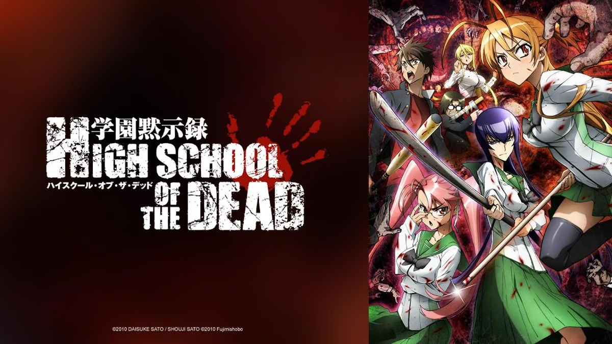

highschool of the Dead, um dos melhores mangás de Terror com zumbi que nunca mais voltará.
Highschool of the Dead é um mangá japonês criado por Daisuke Satou e ilustrado por Shouji Satou. Publicado pela primeira vez em 2006 na revista Dragon Age, o mangá é conhecido por sua mistura de ação, horror e elementos de sobrevivência em um cenário pós-apocalíptico.
Sinopse:
Em um mundo devastado por uma epidemia viral, a sociedade entra em colapso quando um vírus misterioso transforma a maioria da população em zumbis vorazes. A história segue um grupo de estudantes do ensino médio e outros sobreviventes enquanto tentam escapar da escola e encontrar um local seguro em meio ao caos
Takashi Komuro, um estudante do ensino médio, se vê no centro da crise quando o surto começa. Junto com Rei Miyamoto, sua ex-namorada, e Saeko Busujima, uma habilidosa espadachim e líder do clube de artes marciais, eles formam um grupo de sobreviventes em busca de segurança. À medida que a epidemia se espalha, eles encontram outros sobreviventes, enfrentam hordas de zumbis e lidam com ameaças de outros humanos desesperados.
Enquanto lutam para encontrar abrigo e recursos, o grupo enfrenta desafios tanto externos quanto internos. Eles precisam superar a desconfiança e os conflitos pessoais para manter sua coesão e aumentar suas chances de sobrevivência. A história explora temas de sobrevivência, confiança e o impacto do apocalipse zumbi na natureza humana, com muita ação, terror e momentos de tensão.
Em meio ao caos e à luta pela sobrevivência, o grupo descobre que o verdadeiro desafio pode ser não apenas lutar contra os mortos-vivos, mas também lidar com os medos e conflitos internos que surgem em uma situação extrema.
Temas e Estilo:
Ação e Horror: O mangá é conhecido por suas cenas intensas de ação e elementos de horror gráfico, com muitos momentos de combate contra zumbis e outros perigos.
Sobrevivência e Humanidade: Além da luta pela sobrevivência, a história explora questões sobre a natureza humana e como as pessoas reagem em situações extremas. Existe um foco significativo nas dinâmicas de grupo e nas tensões que surgem em tempos de crise.
Fanservice e Ecchi: Highschool of the Dead é também conhecido por seu uso de fanservice e elementos ecchi (imagens sugestivas e cenas de natureza sexual), que são um aspecto controverso e marcante do mangá.
Popularidade e Recepção:
O mangá ganhou uma base de fãs significativa e foi elogiado por sua arte detalhada e cenas de ação bem elaboradas. No entanto, também foi criticado por sua representação sexualizada e pelo exagero nas cenas de violência. A série teve uma adaptação para anime que foi lançada em 2010, o que ajudou a aumentar ainda mais sua popularidade.
Status:
Highschool of the Dead foi uma série de sucesso, mas foi interrompida em 2013 devido à saúde do autor Daisuke Satou. Desde então, os fãs têm aguardado ansiosamente por uma conclusão para a série. Apesar de sua interrupção, o mangá continua sendo uma obra influente dentro do gênero de apocalipse zumbi e ação.

Todos os Mangás:
Capítulo 1:

O caos começa quando um vírus misterioso se espalha, transformando a população em zumbis. Takashi e Rei, dois alunos do ensino médio, tentam escapar da escola e se reúnem com outros sobreviventes enquanto enfrentam hordas de mortos-vivos.
Capítulo 2:

O grupo se divide para buscar mais sobreviventes e recursos. Eles encontram a enfermeira Saeko, que se junta ao grupo, e uma batalha intensa se desenrola enquanto tentam escapar de um grupo de zumbis em um shopping.
Capítulo 3:

O grupo chega a uma casa segura onde eles tentam estabelecer uma base. As tensões internas surgem, e eles enfrentam problemas de sobrevivência enquanto lidam com a ameaça constante dos zumbis.
Capítulo 4:

A situação se torna mais complicada quando eles são atacados por um grupo de sobreviventes hostis que tentam roubar seus recursos. A luta por sobrevivência e a confiança entre os membros do grupo são desafiadas.
Capítulo 5:

O grupo decide se aventurar para encontrar um local mais seguro e explorar uma base militar. Eles enfrentam novos desafios e continuam a enfrentar zumbis e humanos hostis.
Capítulo 6:

A tensão aumenta quando descobrem que a base militar foi comprometida e está cheia de zumbis. O grupo precisa encontrar uma forma de escapar e de se manter unido enquanto o perigo se aproxima.
Capítulo 7:

Com a base militar se tornando cada vez mais perigosa, o grupo decide procurar uma nova rota para segurança. Eles enfrentam mais perigos e desafios enquanto lutam para sobreviver e proteger uns aos outros.
Lembrando que o Mangá tem sua representação gigantesca nos animes, aqui está 10 episódios da primeira temporada:
- Rage! - O apocalipse zumbi começa com a invasão de uma escola. Os estudantes enfrentam a emergência, tentando escapar da escola e enfrentar a nova ameaça. O grupo principal inclui Takashi, Rei, e outros sobreviventes.
- The Day of the Dead - Takashi e seus amigos, incluindo a enfermeira Shizuka, fogem da escola e encontram um carro. Eles enfrentam hordas de zumbis e tentam chegar a um local seguro.
- Escape - O grupo decide ir para a casa de um dos membros, Saya. Eles enfrentam vários obstáculos e zumbis no caminho, descobrindo mais sobre a gravidade da situação.
- Pursuit - A sobrevivência se torna mais difícil quando o grupo é atacado por zumbis e enfrenta problemas internos. Eles também se deparam com outros sobreviventes com intenções questionáveis.
- The Dead Way - O grupo faz uma pausa na casa de uma conhecida de Shizuka. Eles enfrentam desafios enquanto tentam encontrar suprimentos e garantir a segurança de todos.
- The Calm - Após um período relativamente calmo, o grupo começa a se estabelecer em um local mais seguro. No entanto, a paz é breve, e eles logo enfrentam novas ameaças e conflitos.
- The Way to Live - O grupo tenta encontrar um refúgio melhor e lida com a falta de recursos. A dinâmica entre os membros do grupo se torna mais complicada à medida que eles enfrentam problemas internos e externos.
- The Dead's Lament - O grupo enfrenta um novo desafio quando um membro é gravemente ferido. Eles devem lidar com a situação e a crescente tensão enquanto tentam encontrar uma solução.
- The End of the World - As tensões atingem um ponto crítico e o grupo enfrenta um ataque zumbi em larga escala. Eles lutam para sobreviver e proteger uns aos outros enquanto o mundo ao seu redor continua a desmoronar.
- The Last Day - O grupo tenta fazer a última tentativa de encontrar um lugar seguro. Eles enfrentam desafios finais e têm que tomar decisões difíceis sobre o futuro enquanto o apocalipse zumbi continua a devastar o mundo.
Top 10 personagens:
1. Takashi Komuro
Descrição: O protagonista da série, Takashi é um estudante do ensino médio que se torna um líder natural do grupo de sobreviventes. Ele é corajoso, determinado e possui habilidades de combate, tanto com armas de fogo quanto com espadas.
2. Rei Miyamoto
Descrição: Ex-namorada de Takashi, Rei é uma das principais combatentes do grupo. Ela é uma experiente praticante de kendo, o que a torna uma lutadora formidável. Sua relação com Takashi e sua lealdade ao grupo são centrais na trama.
3. Saeko Busujima
Descrição: A líder do clube de kendo da escola, Saeko é uma espadachim habilidosa e uma das personagens mais fortes fisicamente. Ela possui um comportamento calmo e centrado, o que a ajuda a lidar com as crises do apocalipse.
4. Saya Takagi
Descrição: Uma das alunas mais inteligentes da escola, Saya é a estrategista do grupo. Ela é uma especialista em matemática e ciência, o que a ajuda a formular planos e estratégias para enfrentar os desafios que surgem.
5. Kohta Hirano
Descrição: Um dos membros mais importantes do grupo quando se trata de combate armado. Kohta é um nerd de armas de fogo e utiliza seu conhecimento para ajudar a proteger o grupo com diversas armas e estratégias de combate.
6. Alice Maresato
Descrição: A filha de um rico empresário, Alice é uma das sobreviventes que se junta ao grupo principal. Ela é conhecida por seu comportamento e aparência jovens, além de ter uma forte vontade de sobreviver.
7. Shizuka Marikawa
Descrição: A enfermeira da escola, Shizuka é a responsável por cuidar dos feridos e manter a moral do grupo. Ela é gentil e dedicada, desempenhando um papel crucial no suporte médico do grupo.
8. Miku Nakano
Descrição: Miku é uma das sobreviventes que se junta ao grupo mais tarde. Ela é uma jovem estudante com habilidades úteis para o grupo, e sua presença ajuda a aumentar as dinâmicas do grupo.
9. Kota Hirano
Descrição: Um estudante que, apesar de seu comportamento inicialmente nerd e reservado, se mostra um membro crucial do grupo devido ao seu conhecimento sobre armas e combate.
10. Rika Minami
Descrição: Ela é a amiga e colega de Shizuka Marikawa e também desempenha um papel importante como parte do grupo de sobreviventes. Sua presença é fundamental para manter a moral e ajudar nas tarefas do grupo.
Screenshots do anime: